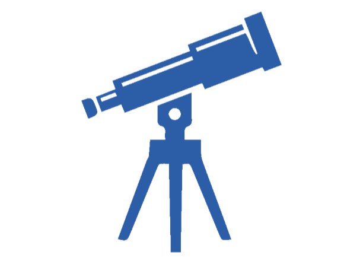
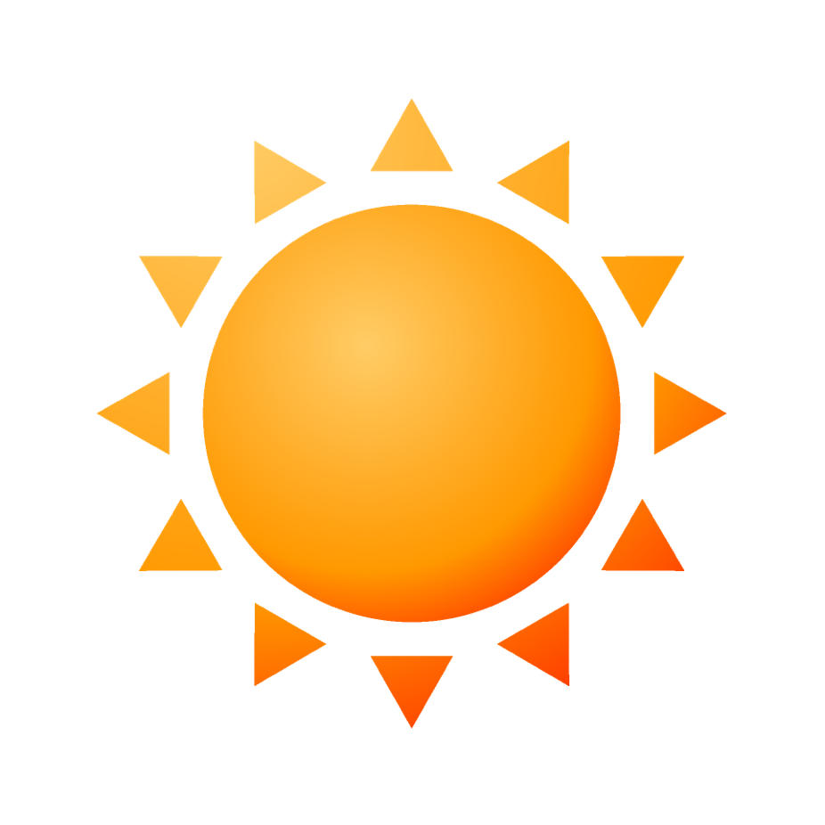
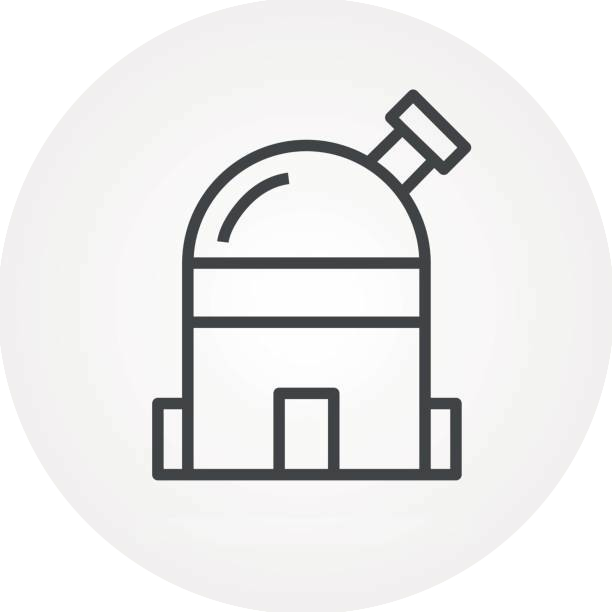

Single Night TripsTime poor? Hate camping? Not to worry, our single night trips wrap up early enough that you can get home before bedtime.
We hold one of these each semester.
Photos from our stargazing trips and events
We organise trips out of Sydney to get to areas of low light pollution, giving you the best conditions for stargazing. There are two kinds of trips we organise: single night trips, and camping trips.

Single Night TripsTime poor? Hate camping? Not to worry, our single night trips wrap up early enough that you can get home before bedtime.
We hold one of these each semester.
If camping is your jam, then come to our camping trips! We stay at a site overnight so we can get as much time stargazing as possible. We hold these during the mid-semester and semester breaks.
Long car rides and camping at late hours not your idea of fun? Don’t worry, we also hold events so that you can enjoy astronomy from the comfort of the university.

Solar AstronomyView the sun through our solar telescope! We bring it out on occasion, giving you the opportunity to observe sunspots and solar activity.

Local StargazingStargaze on Campus! Despite Sydney’s light pollution, there are plenty of things you can see in the night sky with a telescope. Take a look through ours!
Test out your astronomical and general knowledge at one of our trivia nights. Grab a beer, and you might make some friends along the way.
Membership is open to all University of Sydney students. Signing up gets you onto our mailing list so you hear about stargazing trips, camping trips and on-campus events before they fill up.
The quickest way to join is through the University of Sydney Union club page, which handles membership and payments.
No experience needed. Come along to one of our general meetings, or just turn up to a stargazing night and say hello.
Email us and we’ll help you get sorted, including arranging transport to trips.